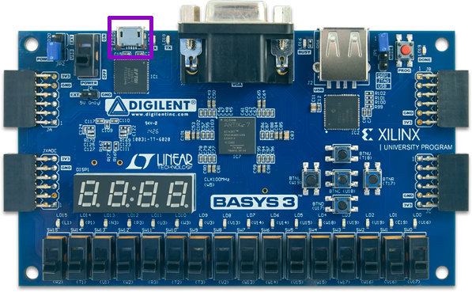
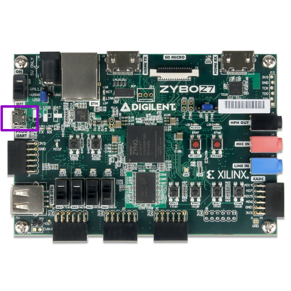
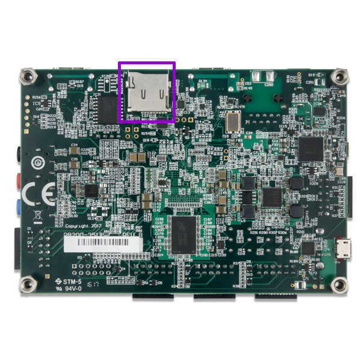
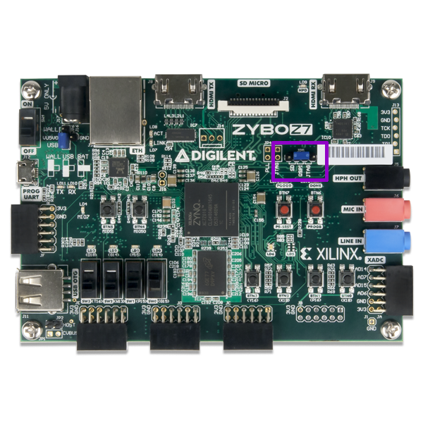

Running example designs¶
This section describes how to properly connect your board. It also helps you configure and run any other software that is necessary to observe results.
Connecting development boards¶
Arty board¶
Connect the board to your computer using the USB cable
Connect the board to your computer using the Ethernet cable (only if you want to test the LiteX Linux Example)
{kind=link}
Basys 3 board¶
Connect the Basys3 Board to your computer using the USB cable:
{kind=link}
Zybo-Z7 board¶
Connect the Zybo-Z7 Board to your computer using the USB cable:
{kind=link}
Insert the SD card in the dedicated slot:
{kind=link}
Connecting to UART¶
First check available teletypes with:
ls -l /dev | grep ttyUSB
You should see at least one, e.g.:
crw-rw----+ 1 root plugdev 188, 0 11-06 13:58 ttyUSB0
crw-rw----+ 1 root plugdev 188, 1 11-06 13:58 ttyUSB1
Simply use picocom to connect:
picocom -b 115200 --imap lfcrlf /dev/ttyUSB1
Warning
Substitute 115200 with the baud rate that your design uses!
Warning
Please note that /dev/ttyUSB1 is just an example. The number appearing may change!
Note
If the picocom is unable to connect to any ttyUSBx device, you probably don’t have appropriate user permissions.
On Debian distributions, type the command below to add the user to the dialout group.
This should resolve the missing permissions problem:
sudo usermod -a -G dialout `whoami`
Setting up TFTP¶
It is assumed that the server is running on port 6069 and uses /tftp directory.
Install tftp with (Ubuntu example):
sudo apt install tftpd-hpa
Create a directory for the server:
sudo mkdir -p /tftp sudo chmod 777 -R /tftp sudo chown tftp -R /tftpSet up your TFTP configuration with:
cat << EOF | sudo tee /etc/default/tftpd-hpa TFTP_USERNAME="tftp" TFTP_DIRECTORY="/tftp" TFTP_ADDRESS=":6069" TFTP_OPTIONS="--secure" EOF
Restart the TFTP server:
sudo systemctl restart tftpd-hpa
Configuring your network interfaces¶
Check your network interfaces with:
ip link
Add IPv4 address to you interface:
ip addr add 192.168.100.100/24 dev eth0
Warning
192.169.100.100/24 and eth0 are just examples!
Setting up Zynq ARM CPU¶
Zynq FPGAs include an ARM CPU. This guide instructs on setting up U-boot to run Linux, load bitstreams and control the Programmable Logic through the ARM CPU.
Prepare SD card¶
Format the SD card by following the official guide.
Download and extract pre-built U-boot images:
mkdir uboot-linux-images pushd uboot-linux-images wget -qO- https://github.com/SymbiFlow/symbiflow-xc7z-automatic-tester/releases/download/v1.0.0/uboot-linux-images.zip | bsdtar -xf- popd
Copy U-boot images to the boot mountpoint:
cp uboot-linux-images/boot/* /path/to/mountpoint/boot/ sync
Copy Arch Linux to the root mountpoint:
wget -qO- http://de5.mirror.archlinuxarm.org/os/ArchLinuxARM-armv7-latest.tar.gz | sudo tar -xvzC /path/to/mountpoint/root syncCopy additional files and binaries to the root directory in the Arch Linux filesystem:
sudo cp -a uboot-linux-images/root/* /path/to/mountpoint/root/root/ sync
Note
/path/to/mountpoint is the path to the mounted SD card. If everything was set correctly in the formatting step, the boot and root directories should be under /media/<user>/
Note
/path/to/mountpoint/root contains the Arch Linux filesystem, while /path/to/mountpoint/root/root/ is a directory within the filesystem itself.
Warning
The sync step is crucial to let all the write buffers to complete the writing step on the SD card.
Load bitstreams from U-boot¶
Make sure to have prepared the SD correctly.
With the SD card inserted in the PC, copy the bitstream in the boot directory:
cp <name>.bit /path/to/mountpoint/boot sync
Set the jumper J5 to SD.
With the Zybo-Z7 connected insert the SD in the board’s slot and switch on the board.
Connect to UART, see Connecting to UART.
Press the reset
PS SRSTbutton on the Zybo-Z7 and halt U-boot autoboot by pressing any key in the picocom terminal.On the picocom terminal, you should have access to the U-boot terminal. Load the bitstream to memory:
Zynq> load mmc 0 0x10000000 <name>.bitThe size of the loaded bitstream appears on console:
<size> bytes read in 128 ms (15.5 MiB/s)
Load the bitstream to the FPGA:
Zynq> fpga loadb 0 0x10000000 <size>
{kind=link}